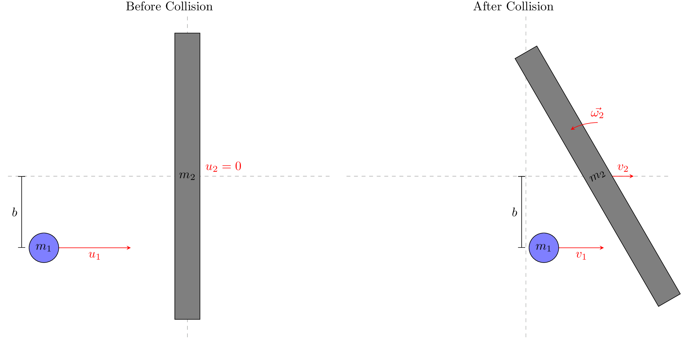

##################################################################
##
## puckStickCollision.py
## Author: SF Wolf
##
## This script simulates a collision between a puck and a stick.
## Initially the stick is still and the puck is moving towards
## the stick perpendicular to its length.
##################################################################
from manim import *
import numpy as np
from scipy.optimize import fsolve
def doCollision(params):
'''
This function does the physics for the 1D collision. It assumes normal incidence,
and that the stick is stationary in the reference frame initially. No unit system
is assumed in this calculation
params = a vector containing
m1 - puck mass in desired mass unit
m2 - stick mass in desired mass unit
L - stick length in desired length unit
b - impact parameter of the collision in desired length unit
u1 - initial velocity of the stick (x-component) in desired speed unit
cor - coefficient of restitution (dimensionless)
rad - puck radius (for visualization purposes only) in desired length unit
thk - stick thickness (for visualization purposes only) in desired length unit
'''
# Parameters
m1, m2, L, b, u1, cor, rad, thk = params
I = 1/12 * m2 * L**2
v1eC = (m1-m2)/(m1+m2) * u1
v2eC = 2 * m1/(m1+m2) * u1
def equations(vars):
v1, v2, omega2 = vars
eq1 = m1*v1 + m2*v2 - m1*u1
eq2 = m1*v1*b + I*omega2 - m1*u1*b
eq3 = np.abs(v2+b*omega2-v1) - cor*np.abs(u1)
return [eq1, eq2, eq3]
init_guess = [v1eC,v2eC,0]
sol = fsolve(equations, init_guess)
return sol
class Puck(Circle):
'''
Create a "puck" object with appropriate mass and radius.
'''
def __init__(self,mass,radius):
self.radius = radius
self.mass = mass
Circle.__init__(self, radius=self.radius,color=WHITE)
self.set_fill(color=WHITE, opacity=1)
class Stick(Rectangle):
'''
Create a "stick" object with appropriate mass, length, thickness and angle.
'''
def __init__(self,mass,length,thickness,angle):
self.mass = mass
self.length = length
self.thickness = thickness
self.angle = angle
Rectangle.__init__(self, height=self.length, width = self.thickness,color=BLUE)
self.rotate(self.angle, about_point=self.get_center())
self.set_fill(color=BLUE, opacity=1)
class puckStickCollision(Scene):
'''
Create the collision visualization
'''
def construct(self):
# Create axes and number plane for visualization purposes
ax = Axes(
tips=False,
axis_config={"include_numbers": False}
)
# The axes are used to place objects on the screen with standard 2D units
numPlane = NumberPlane(
background_line_style={
"stroke_color": WHITE,
"stroke_opacity":0.2
}
)
# Only add the number plane so that I don't have to worry about
# different scales between the axes and number plane
self.add(numPlane)
##########################################################
## puck-stick properties for collision
## ADJUST THESE TO CREATE DIFFERENT INITIAL CONDITIONS
m1 = 1
m2 = 2
u1 = 2
b = 2
L = 6
cor = 0.5
rad = 0.1
thk = 0.2
##########################################################
params = m1, m2, L, b, u1, cor, rad, thk
## calculate the final velocity for the collision
v1, v2, omega2 = doCollision(params)
## Put objects on screen
puck = Puck(mass=m1,radius=rad)
puck.x, puck.y = [-4, -b] # Initial position
puck.vx, puck.vy = [u1, 0] # Initial velocity
puck.omega = 0 # Initial angular velocity
puck.shift(ax.coords_to_point(puck.x, puck.y)) # Place on screen
puck.coll = False # Indicator if collision has happened yet
stick = Stick(mass=m2,length=L,thickness=thk,angle=0)
stick.x, stick.y = [0,0] # Initial position of stick CM
stick.vx, stick.vy = [0,0] # Initial velocity of stick CM
stick.omega = 0 # Initial angular velocity of stick around CM
stick.shift(ax.coords_to_point(stick.x, stick.y)) # Place on screen
stick.coll = False # Indicator if collision has happened yet
## To help guide the eye, and answer questions about how the CM changes for
## different collisions, I will also draw the center of mass
BRIGHTGREEN = ManimColor('#66FF00')
cm = Dot(color=BRIGHTGREEN,radius=0.04)
# Calculate the position and velocity
cm.x = (puck.mass * puck.x + stick.mass*stick.x)/(puck.mass+stick.mass)
cm.y = (puck.mass * puck.y + stick.mass*stick.y)/(puck.mass+stick.mass)
cm.vx = (puck.mass * puck.vx + stick.mass*stick.vx)/(puck.mass+stick.mass)
cm.vy = (puck.mass * puck.vy + stick.mass*stick.vy)/(puck.mass+stick.mass)
cm.omega = 0
cm.shift(ax.coords_to_point(cm.x, cm.y)) # Place on screen
cm.coll = False # Indicator if collision has happened yet
def update(mob,dt):
'''
Update the position of each mobject. Since there are no external forces or
torques, all motion is constant linear/angular velocity motion
'''
dx, dy = [mob.vx * dt, mob.vy*dt]
mob.shift(ax.coords_to_point(dx, dy))
mob.rotate(mob.omega*dt,about_point=mob.get_center())
## Test to see if there is a collusion during the next time step
handle_collision(mob)
def handle_collision(mob):
'''
Since my doCollision function assumes the stick is at rest, I need to
only allow the collision to happen once
'''
if not mob.coll:
# Calculate stick CM coords
x0, y0 = ax.point_to_coords(stick.get_center())
# and puck position
xp, yp = ax.point_to_coords(puck.get_center())
theta = stick.angle
# buffer is the minimum distance between puck and stick impact point
buffer = stick.thickness + puck.radius
# Determine the position of the impact point on the stick relative to the CM
A = np.array([[1, np.tan(theta)],[np.tan(theta), -1]])
B = np.array([x0-y0*np.tan(theta), xp*np.tan(theta) - yp])
X, Y = np.linalg.solve(A,B)
# Calculate current distance between puck and impact point
dist = np.linalg.norm(np.array([X-xp, Y-yp]))
if dist <= buffer:
# Update the velocities
puck.vx = v1
stick.vx = v2
stick.omega = omega2
cm.vx = (puck.mass * puck.vx + stick.mass*stick.vx)/(puck.mass+stick.mass)
# Show that the collision has occured
puck.coll=True
stick.coll=True
cm.coll=True
## Add the update function to each mobject so that the position of these are updated.
puck.add_updater(update)
stick.add_updater(update)
cm.add_updater(update)
# Annotations for the video
corText = Tex(rf"Coefficient of Restitution $\varepsilon =${cor:.2f}").scale(0.5)
corText.to_corner(DOWN + RIGHT)
sText = Text(f"Stick has mass {m2:.1f} kg",color=BLUE).scale(0.3)
pText = Text(f"Puck has mass {m1:.1f} kg",color=WHITE).scale(0.3)
pText.next_to(sText, DOWN)
cmText = Text("Center of mass marked in green",color=BRIGHTGREEN).scale(0.3)
cmText.next_to(pText, DOWN)
legend = Group(sText,pText,cmText)
legend.to_corner(UP + LEFT)
self.add(puck,stick,cm,corText,legend)
self.wait(5)
# To render video run the following in a terminal:
# manim -pql puckStickCollision.py puckStickCollisionThe end:
I can make this pretty video using Manim!
The beginning:
I’ve been making some visualizations for my physics classes. I’ve used VPython/Glowscript in the past however, that wasn’t working for me, and I couldn’t track the bugs. I’ve been meaning to play with Manim. So, I’ve done that!
The physics:
First, set up the problem
For this calculation, I’ll be working in the LAB frame (with the initial velocity, and initial angular velocity of the stick equal to zero).

After the collision is complete, I will define:
- \(\vec{v}_1 = (v_1, 0)\) is the velocity of the puck. During the collision, we’ll assume that the force that the stick exerts on the puck is purely horizontal. Therefore, the final velocity of the puck will be also in the \(x-\)direction.
- \(\vec{v}_2 = (v_2, 0)\) is the velocity of the stick’s center of mass. During the collision, the puck’s force on the stick is purely horizontal. Therefore, the final velocity of the stick’s center of mass will be also in the \(x-\)direction.
- \(\omega_2\) is the z-component of the angular velocity of the stick about it’s center of mass.
Now, do the collision physics
Conservation of momentum in the \(x-\)direction:
\[ m_1 u_1 = m_1 v_1 + m_2 v_2 \]
Conservation of angular momentum in the \(z-\)direction: \[ m_1 u_1 b = m_1 v_1 b + I\omega_2 \] where \(I\) is the moment of inertia of a stick with length \(L\) about it’s center of mass: \(I = \frac{1}{12}m_2 L^2\).
Coefficient of restitution
The coefficient of restitution is generally defined as the “bounciness” of a collision. The coefficient of restitution has the following properties
- \(\varepsilon = 1\) for Elastic collisions
- \(\varepsilon < 1\) for Inelastic collisions
- \(\varepsilon = 0\) for Totally inelastic collisions (This is when the objects stick together)
The coefficient of restitution is defined as: \[ \varepsilon = \frac{\left|\text{final relative velocity}\right|}{\left|\text{initial relative velocity}\right|} \] For collisions between point particles, we define: \[ \varepsilon = \frac{\left|\vec{v}_2-\vec{v}_1\right|}{\left|\vec{u}_2-\vec{u}_1\right|} \] where \(\vec{u}_1, \vec{u}_2\) are the initial velocities, and \(\vec{v}_1, \vec{v}_2\) are the final velocities of the two objects.
For extended systems, we need to calculate this using the relative velocities of the impact points. For this system, we can define: \[ \varepsilon = \frac{\left|v_2^* - v_1\right|}{\left|u_1\right|} \]
where, \(v_2^* = v_2 + \omega_2 b\) is the velocity of the impact point on the stick. This is a common technique used in subsequent mechanics courses. For this calculation, I will force \(\varepsilon \neq 0\) because if the puck “sticks” to the stick like a totally inelastic collision, the motion after will be of a composite object, rather than a separate puck and stick.
Solve this system of equations
The above 3 conditions provide us with 3 equations relating 3 unknowns \((v_1, v_2, \omega_2)\) in terms of known quantities. I could try to solve these symbolically, but I really don’t feel the need to do so. Rather I’ll use a numerical technique using the python function fsolve in the scipy library. To accomplish this, I need to rearrange these equations so that they all equal zero:
\[ \begin{align*} 0 &= m_1 v_1 + m_2 v_2 - m_1 u_1\\ 0 &= m_1 v_1 b + I \omega_2 - m_1 u_1 b\\ 0 &= \left|v_2 + b \omega_2 - v_1\right| - \varepsilon\left|u_1\right| \end{align*} \]
The code
I put all of this together in the code linked here and reproduced below. In order for it to work, you’ll need to have manim installed on your computer.